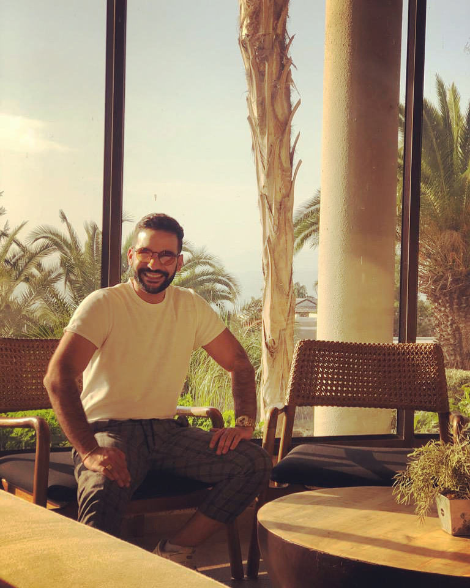
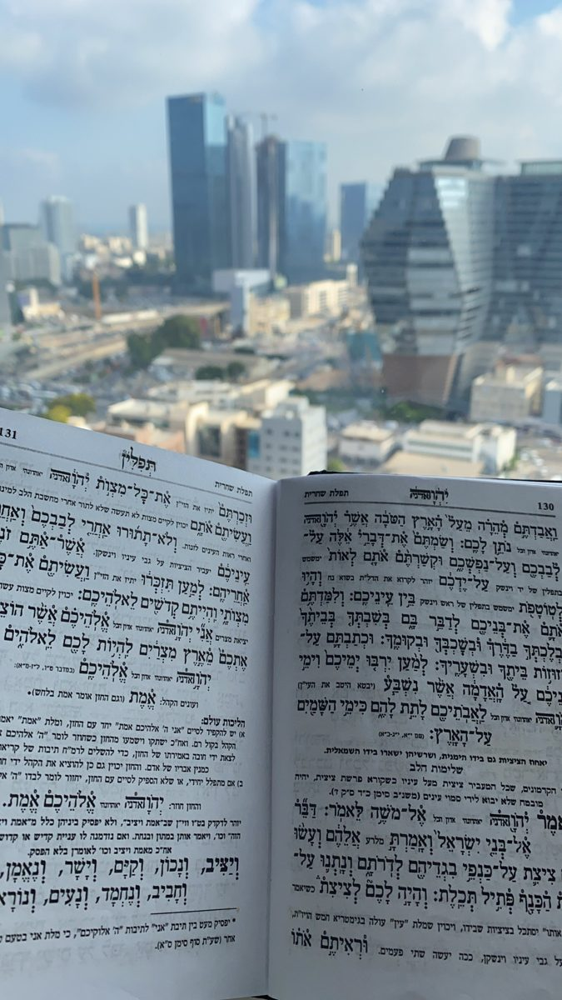

למי שעובד 9 עד 5, ורוצה לסחור כמו מי שמבין מה הוא עושה, בלי לשרוף את הכסף, את הבריאות ואת הזוגיות.

אני רוצה להצטרף לעוגןעשיתי את החשבון באמצע יום עבודה. 100 דולר כפול 20 ימי מסחר. יותר מהמשכורת שלי. בלי בוס, בלי לקוחות, בלי לנסוע לשום מקום.
זה נשמע כל כך קטן. אז התחלתי לרדוף אחריו.
סקאלפ פה. סקאלפ שם. 2 נקודות, יוצא. עוד 2, יוצא. הייתי בטוח שאני צריך להיות מהיר יותר, חד יותר, עם עוד אינדיקטור אחד על הגרף.
ובימים שה־100 לא הגיע? נשארתי מול המסך עד שהוא יגיע. ואז הפסדתי 300.
והכי גרוע: פתאום המשכורת שלי נראתה קטנה. העבודה נראתה מיותרת. לא הייתי מרוצה בשוק, ולא הייתי מרוצה בחיים.
בא לי קולה, והאשראי לא עובר. הולך לכספומט. הכרטיס נבלע. לוקח מים, חצי מהמחיר של הקולה. גם זה לא עובר.
אוסף 10 שקלים בעודף מתחת לכיסאות ברכב. 10 שקלים שהפכו להיות כל העולם שלי.
כמה זמן אחר כך עצרתי את הג'יפ בשוליים של איילון. גג פתוח, מזגן דלוק, חלונות פתוחים. ולא היה לי אוויר.
החשבון ריק. חוב. ולא ידעתי איך אני מספר לבת הזוג שלי שהחתונה כבר לא באופק.
[השלם: מה אמרת לה באותו יום, במילים שלך]
באותו יום, בשוליים, החלטתי להתאפס.
הוא מתגמל על מה שקורה לפניו. ועד היום הבנה הזאת היא מה שמחזיק אותי.
אז עשיתי משהו שאף קורס לא ביקש ממני. עברתי על יותר מ־1,000 עסקאות שלי. אחת אחת. מה עשיתי, מה הרגשתי, איפה סטיתי. לא את הגרף. את עצמי מול הגרף.

מזה כתבתי את התוכנית הראשונה שלי. דף אחד. מתי אני סוחר, מתי לא, כמה מותר לי להפסיד, ומה אני עושה ביום שהכל הולך הפוך.
לקח לי שנה לחזור לרווחיות. ועוד כמה שנים עד שהמסחר מימן לי את רוב המחיה. היום אני מביא לחם הביתה מהשוק, גם בתקופות שאני שכיר של מישהו אחר.
ואת אותו דף בדיוק אני בונה היום עם הסוחרים בעוגן.
אני יניר. מרעננה. שישה שנים במסחר, ארבע מהן רק בחוזים על מדדי המניות של CME, בעיקר ES ו־MES. מסחר תוך־יומי, בשיטה ידנית שנשענת על Auction Market Theory, Wyckoff, Volume Profile ו־Order Flow.
לפני זה הייתי מפקד חוליה. ולמדתי שבלחץ, מי שלא יודע מה הוא עושה הוא זה שמפיל את כולם. במסחר זה אותו דבר, רק שההפסד נכתב בחשבון ולא על הקרקע.
היום אני משנה לזוהר ליבוביץ בקהילה שלו. אנשים באים אליי עם בעיות טכניות, עם תקלות, ועם השאלות שאף אחד לא רוצה לשאול בקול. אני לא מוכר לך חלום. אני מראה לך איך אני עושה את זה, כולל הטעויות.
ועוד דבר, כדי שתדע מי יושב מולך: אני לא מביא לך תוצאות מדומיינות. אני מביא לך את הדרך שבה עברתי מהמקום שתיארתי למעלה, ואת הכלים שבאמצעותם אני שומר על עצמי היום.
העוגן הוא מועדון פרטי. לא קורס שיושב לך בתיבת מייל ומחכה שתפתח אותו. מועדון שבו אתה לא לבד, ושבו יש מישהו שמסתכל על מה שאתה עושה.
בתוך העוגן: התוכנית האישית שלך על דף אחד. השיעורים שבונים אותה. המשימות שממלאות אותה. והקהילה של סוחרי 9־5 שעושים את אותו דבר, באותה שעה, בשביל אותם מטרות.
מי שנכנס לעוגן לא נכנס ללמוד עוד משהו. הוא נכנס כדי לסחור פחות, ליותר מסודר.
כל מה שאני מוכר בכסף, אתה מקבל ישר. בלי הזמנה, בלי לשלם עליו שוב.
סה״כ שווי מוצהר: [חשב את הסכום] ₪. את כל זה אתה מקבל בחברות.
זה מה שאתה חוסך כשאתה מצטרף עכשיו. ושום דבר מזה לא מחייב אותך לשום דבר נוסף.
העוגן מוגבל ל־20 חברים בלבד. לא מכניס יותר, כי אני לא יכול לתת את אותה תשומת לב לכל מי שנכנס.
מחיר המועדון: [מחיר המועדון] ₪. תשלום אחד או חלוקה. מי שנכנס מקבל את כל מה שכתבתי למעלה.
פגישת ייעוץ אישית איתי, אחד על אחד.
ניתוח אישי של המסחר שלך, מהדף הראשון ועד האחרון.
שמירת מחיר קבועה למועדון הדיגיטלי, לתמיד. מה שאתה משלם היום, תשלם גם בעוד שנה, ובעוד חמש.
זה מתאים לחשבון ממומן?
כן. גבולות היום וניהול הסיכון הם בדיוק מה שמחזיק חשבון ממומן בחיים. לא מבטיחים רווחים, ולא נכנסים לקרב כדי להחזיר הפסד.
כמה זמן זה לוקח?
בערך שבוע לבניית התוכנית, ואחריה עבודה שוטפת לאורך זמן. כל שיעור נגמר במשימה קצרה.
מה קורה אם אני לא מצליח?
[השלם: תנאי ביטול והחזר, בדיוק כמו שהם ייכתבו בחוזה]
איך משלמים?
לוחצים על הכפתור, כותבים לי בוואטסאפ, ואני שולח קישור תשלום מאובטח. אפשר לחלק לתשלומים.
יש ביטול?
כן. מדיניות הביטול המלאה תופיע בחוזה לפני התשלום.
את הידע כבר יש לך. חסרה לך המסגרת.
אני רוצה להצטרף לעוגןהמידע בעמוד הזה הוא לימוד ולא ייעוץ השקעות. מסחר בחוזים כרוך בסיכון גבוה, ואפשר להפסיד את כל הכסף.